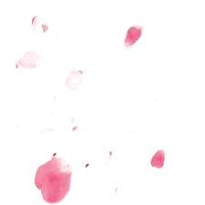
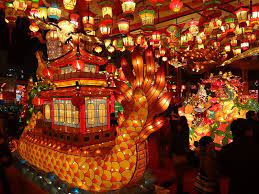

Welcome to E-Japan!
We provide information about Japan including facts, fun and new trends,
traditional and pop culture, science and technology, food, travel, and
life style.
Here are our top articles:
Kyoto
Kyoto, located in the Kansai region of Japan, is the country's seventh
largest city, with a population of 1.4 million people. Steeped in
history, Kyoto is home to roughly one quarter of Japan's national
treasures, countless shrines and temples, and seventeen sites
recognized by UNESCO as World Heritage Sites.
Click on this link for more information

Tokyo
Tokyo is the administrative, cultural, financial, commercial, and
educational centre of Japan and the focus of an extensive urban
complex that includes Kawasaki and Yokohama. Attractions include the
Imperial Palace, encircled by stone-walled moats and broad gardens,
and numerous temples and shrines.
Click on this link for more information

Culture
Japan's architecture, art, traditions, crafts, and its worldwide known
pop culture (including manga, anime, and video games) is something
that definitely only Japan can offer. No other country contains the
same characteristics.
Click on this link for more information
